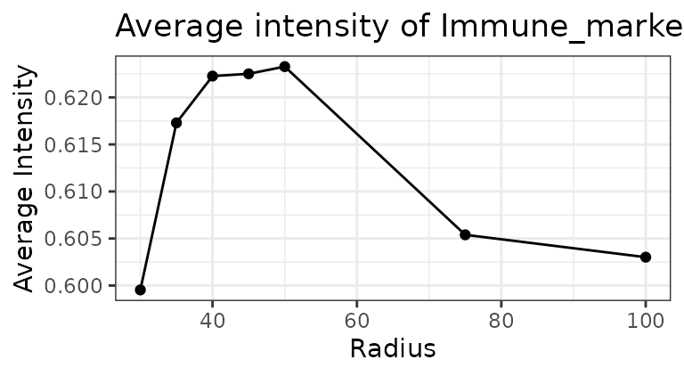
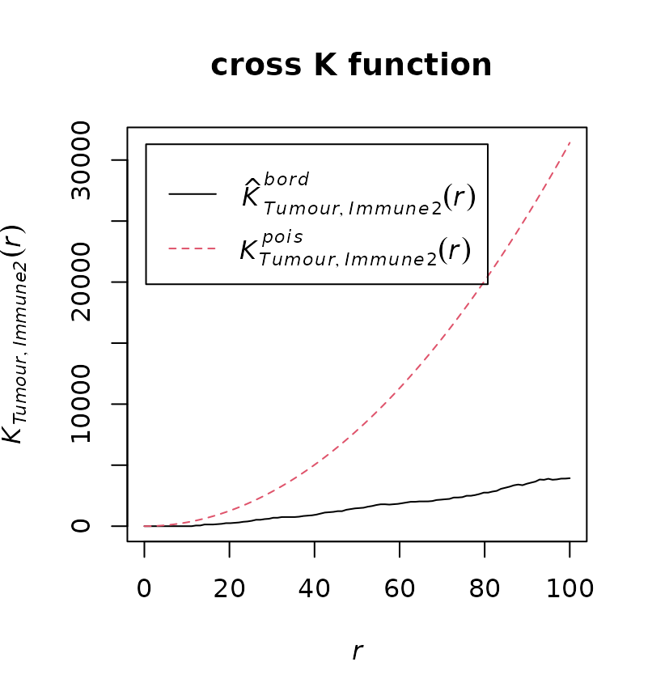
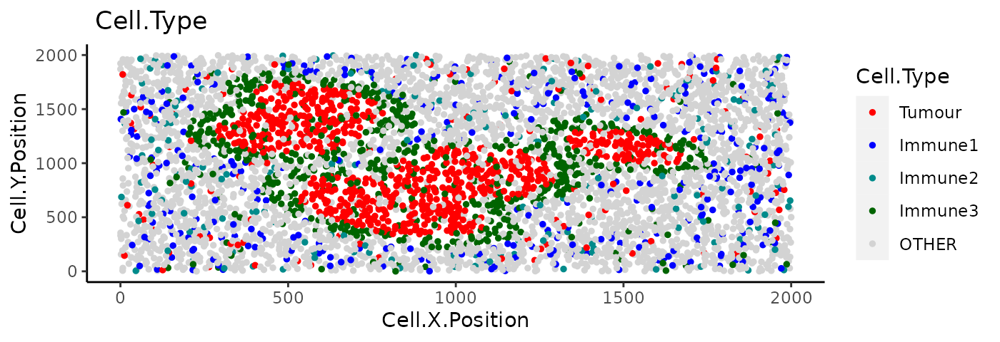
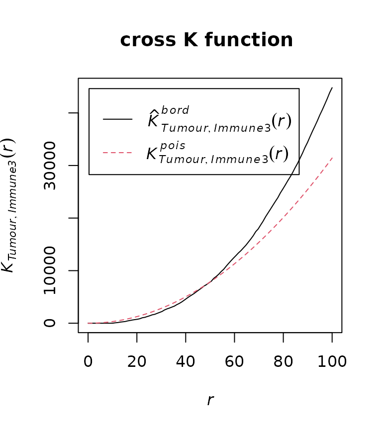

Quantifying cell colocalisation with SPIAT
Yuzhou Feng
2023-05-24
Source:vignettes/cell-colocalisation.Rmd
cell-colocalisation.RmdWith SPIAT we can quantify cell colocalisation, which refers to how much two cell types are colocalising and thus potentially interacting.
In this vignette we will use an inForm data file that’s already been
formatted for SPIAT with format_image_to_spe(), which we
can load with data(). We will use
define_celltypes() to define the cells with certain
combinations of markers.
data("simulated_image")
# define cell types
formatted_image <- define_celltypes(
simulated_image,
categories = c("Tumour_marker","Immune_marker1,Immune_marker2",
"Immune_marker1,Immune_marker3",
"Immune_marker1,Immune_marker2,Immune_marker4", "OTHER"),
category_colname = "Phenotype",
names = c("Tumour", "Immune1", "Immune2", "Immune3", "Others"),
new_colname = "Cell.Type")Cells In Neighbourhood (CIN)
We can calculate the average percentage of cells of one cell type
(target) within a radius of another cell type (reference) using
average_percentage_of_cells_within_radius().
average_percentage_of_cells_within_radius(spe_object = formatted_image,
reference_celltype = "Immune1",
target_celltype = "Immune2",
radius=100, feature_colname="Cell.Type")## [1] 4.768123Alternatively, this analysis can also be performed based on marker
intensities rather than cell types. Here, we use
average_marker_intensity_within_radius() to calculate the
average intensity of the target_marker within a radius from the cells
positive for the reference marker. Note that it pools all cells with the
target marker that are within the specific radius of any reference cell.
Results represent the average intensities within a radius.
average_marker_intensity_within_radius(spe_object = formatted_image,
reference_marker ="Immune_marker3",
target_marker = "Immune_marker2",
radius=30)## [1] 0.5995357To help identify suitable radii for
average_percentage_of_cells_within_radius() and
average_marker_intensity_within_radius() users can use
plot_average_intensity(). This function calculates the
average intensity of a target marker for a number of user-supplied radii
values, and plots the intensity level at each specified radius as a line
graph. The radius unit is pixels.
plot_average_intensity(spe_object=formatted_image, reference_marker="Immune_marker3",
target_marker="Immune_marker2", radii=c(30, 35, 40, 45, 50, 75, 100))
This plot shows low levels of Immune_marker3 were observed in cells near Immune_marker2+ cells and these levels increased at larger radii. This suggests Immune_marker2+ and Immune_marker3+ cells may not be closely interacting and are actually repelled.
Mixing Score (MS) and Normalised Mixing Score (NMS)
This score was originally defined as the number of immune-tumour
interactions divided by the number of immune-immune interactions (Keren et al. 2018). SPIAT generalises this
method for any user-defined pair of cell types.
mixing_score_summary() returns the mixing score between a
reference cell type and a target cell type. This mixing score is defined
as the number of target-reference interactions/number of
reference-reference interactions within a specified radius. The higher
the score the greater the mixing of the two cell types. The normalised
score is normalised for the number of target and reference cells in the
image.
mixing_score_summary(spe_object = formatted_image, reference_celltype = "Immune1",
target_celltype = "Immune2", radius=100, feature_colname ="Cell.Type")## Reference Target Number_of_reference_cells Number_of_target_cells
## 2 Immune1 Immune2 338 178
## Reference_target_interaction Reference_reference_interaction Mixing_score
## 2 583 592 0.9847973
## Normalised_mixing_score
## 2 0.9322379Cross K function
Cross K function calculates the number of target cell types across a range of radii from a reference cell type, and compares the behaviour of the input image with an image of randomly distributed points using a Poisson point process. There are four patterns that can be distinguished from K-cross function, as illustrated in the plots below. (taken from here in April 2021).

Here, the black line represents the input image, the red line represents a randomly distributed point pattern.
- 1st plot: The red line and black line are close to each other,
meaning the two types of points are randomly independently
distributed.
- 2nd plot: The red line is under the black line, with a large
difference in the middle of the plot, meaning the points are mixed and
split into clusters.
- 3rd plot: With the increase of radius, the black line diverges
further from the red line, meaning that there is one mixed cluster of
two types of points.
- 4th plot: The red line is above the black line, meaning that the two types of points form separated clusters.
We can calculate the cross K-function using SPIAT. Here, we need to define which are the cell types of interest. In this example, we are using Tumour cells as the reference population, and Immune3 cells as the target population.
df_cross <- calculate_cross_functions(formatted_image, method = "Kcross",
cell_types_of_interest = c("Tumour","Immune2"),
feature_colname ="Cell.Type",
dist = 100)
The results shows similar pattern as the 4th plot in the cross K diagram. This means “Tumour” cells and “Immune2” cells are not colocalised (or form separate clusters).
We can calculate the area under the curve (AUC) of the cross K-function. In general, this tells us the two types of cells are:
- negative values: separate clusters
- positive values: mixing of cell types
AUC_of_cross_function(df_cross)## [1] -0.2836735The AUC score is close to zero so this tells us that the two types of cells either do not have a relationship or they form a ring surrounding a cluster.
Cross-K Intersection (CKI)
There is another pattern in cross K curve which has not been previously appreciated, which is when there is a “ring” of one cell type, generally immune cells, surrounding the area of another cell type, generally tumour cells. For this pattern, the observed and expected curves in cross K function cross or intersect, such as the cross K plot above.
We note that crossing is not exclusively present in cases where there is an immune ring. When separate clusters of two cell types are close, there can be a crossing at a small radius. In images with infiltration, crossing may also happen at an extremely low distances due to randomness. To use the CKI to detect a ring pattern, users need to determine a threshold for when there is a true immune ring. Based on our tests, these generally fall within at a quarter to half of the image size, but users are encouraged to experiment with their datasets.
Here we use the colocalisation of “Tumour” and “Immune3” cells as an example. Let’s revisit the example image.

Compute the cross K function between “Tumour” and “Immune3”:
df_cross <- calculate_cross_functions(formatted_image, method = "Kcross",
cell_types_of_interest = c("Tumour","Immune3"),
feature_colname ="Cell.Type",
dist = 100)
Then find the intersection of the observed and expected cross K curves.
crossing_of_crossK(df_cross)## [1] "Crossing of cross K function is detected for this image, indicating a potential immune ring."
## [1] "The crossing happens at the 50% of the specified distance."## [1] 0.5The result shows that the crossing happens at 50% of the specified distance (100) of the cross K function, which is very close to the edge of the tumour cluster. This means that the crossing is not due to the randomness in cell distribution, nor due to two close located immune and tumour clusters. This result aligns with the observation that there is an immune ring surrounding the tumour cluster.
Reproducibility
## R version 4.3.0 (2023-04-21)
## Platform: x86_64-pc-linux-gnu (64-bit)
## Running under: Ubuntu 22.04.2 LTS
##
## Matrix products: default
## BLAS: /usr/lib/x86_64-linux-gnu/openblas-pthread/libblas.so.3
## LAPACK: /usr/lib/x86_64-linux-gnu/openblas-pthread/libopenblasp-r0.3.20.so; LAPACK version 3.10.0
##
## locale:
## [1] LC_CTYPE=C.UTF-8 LC_NUMERIC=C LC_TIME=C.UTF-8
## [4] LC_COLLATE=C.UTF-8 LC_MONETARY=C.UTF-8 LC_MESSAGES=C.UTF-8
## [7] LC_PAPER=C.UTF-8 LC_NAME=C LC_ADDRESS=C
## [10] LC_TELEPHONE=C LC_MEASUREMENT=C.UTF-8 LC_IDENTIFICATION=C
##
## time zone: UTC
## tzcode source: system (glibc)
##
## attached base packages:
## [1] stats4 stats graphics grDevices utils datasets methods
## [8] base
##
## other attached packages:
## [1] SPIAT_1.2.2 SpatialExperiment_1.10.0
## [3] SingleCellExperiment_1.22.0 SummarizedExperiment_1.30.1
## [5] Biobase_2.60.0 GenomicRanges_1.52.0
## [7] GenomeInfoDb_1.36.0 IRanges_2.34.0
## [9] S4Vectors_0.38.1 BiocGenerics_0.46.0
## [11] MatrixGenerics_1.12.0 matrixStats_0.63.0
## [13] BiocStyle_2.28.0
##
## loaded via a namespace (and not attached):
## [1] bitops_1.0-7 deldir_1.0-9
## [3] gridExtra_2.3 rlang_1.1.1
## [5] magrittr_2.0.3 compiler_4.3.0
## [7] spatstat.geom_3.2-1 DelayedMatrixStats_1.22.0
## [9] systemfonts_1.0.4 vctrs_0.6.2
## [11] stringr_1.5.0 pkgconfig_2.0.3
## [13] crayon_1.5.2 fastmap_1.1.1
## [15] magick_2.7.4 XVector_0.40.0
## [17] labeling_0.4.2 scuttle_1.10.1
## [19] utf8_1.2.3 rmarkdown_2.21
## [21] pracma_2.4.2 ragg_1.2.5
## [23] purrr_1.0.1 xfun_0.39
## [25] zlibbioc_1.46.0 cachem_1.0.8
## [27] beachmat_2.16.0 jsonlite_1.8.4
## [29] goftest_1.2-3 highr_0.10
## [31] rhdf5filters_1.12.1 DelayedArray_0.26.3
## [33] spatstat.utils_3.0-3 Rhdf5lib_1.22.0
## [35] BiocParallel_1.34.2 parallel_4.3.0
## [37] R6_2.5.1 bslib_0.4.2
## [39] stringi_1.7.12 spatstat.data_3.0-1
## [41] limma_3.56.1 jquerylib_0.1.4
## [43] Rcpp_1.0.10 bookdown_0.34
## [45] knitr_1.42 tensor_1.5
## [47] R.utils_2.12.2 Matrix_1.5-4
## [49] tidyselect_1.2.0 abind_1.4-5
## [51] yaml_2.3.7 codetools_0.2-19
## [53] spatstat.random_3.1-5 spatstat.explore_3.2-1
## [55] lattice_0.21-8 tibble_3.2.1
## [57] withr_2.5.0 evaluate_0.21
## [59] desc_1.4.2 polyclip_1.10-4
## [61] pillar_1.9.0 BiocManager_1.30.20
## [63] dbscan_1.1-11 generics_0.1.3
## [65] rprojroot_2.0.3 RCurl_1.98-1.12
## [67] ggplot2_3.4.2 sparseMatrixStats_1.12.0
## [69] munsell_0.5.0 scales_1.2.1
## [71] glue_1.6.2 tools_4.3.0
## [73] locfit_1.5-9.7 fs_1.6.2
## [75] rhdf5_2.44.0 grid_4.3.0
## [77] DropletUtils_1.20.0 edgeR_3.42.2
## [79] colorspace_2.1-0 nlme_3.1-162
## [81] GenomeInfoDbData_1.2.10 HDF5Array_1.28.1
## [83] cli_3.6.1 spatstat.sparse_3.0-1
## [85] textshaping_0.3.6 fansi_1.0.4
## [87] S4Arrays_1.0.4 dplyr_1.1.2
## [89] gtable_0.3.3 R.methodsS3_1.8.2
## [91] sass_0.4.6 digest_0.6.31
## [93] dqrng_0.3.0 farver_2.1.1
## [95] rjson_0.2.21 memoise_2.0.1
## [97] htmltools_0.5.5 pkgdown_2.0.7
## [99] R.oo_1.25.0 lifecycle_1.0.3Author Contributions
AT, YF, TY, ML, JZ, VO, MD are authors of the package code. MD and YF wrote the vignette. AT, YF and TY designed the package.